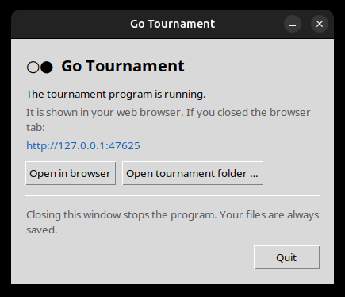
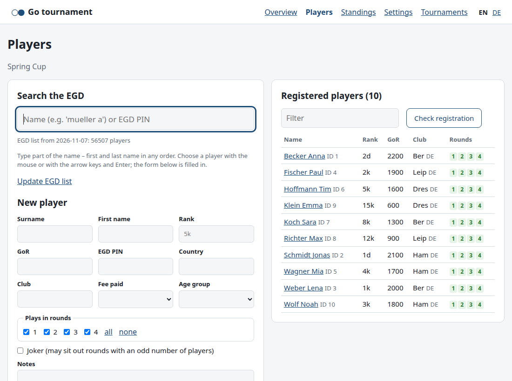
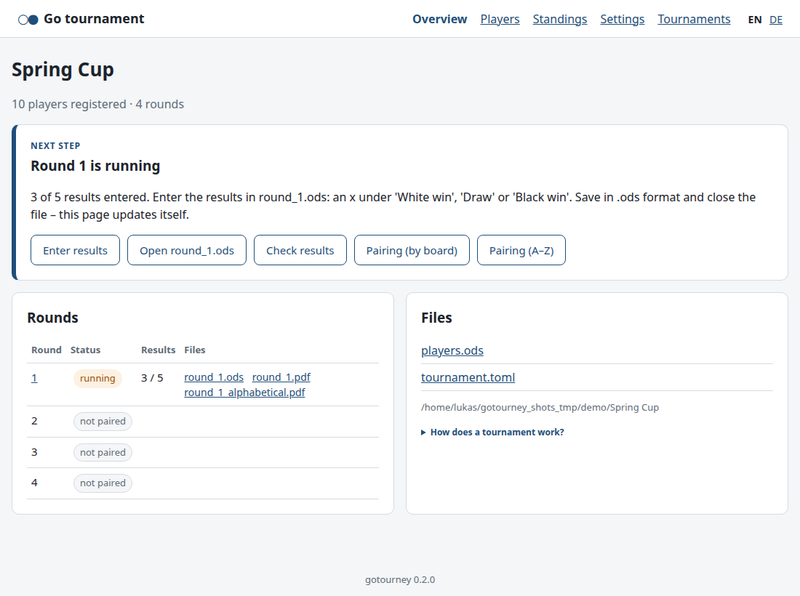
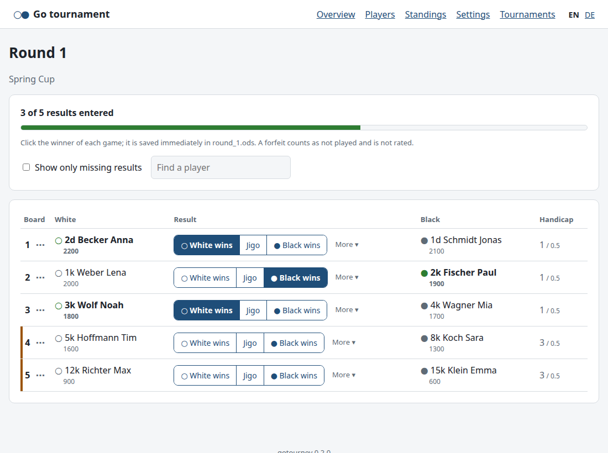

Run a Go tournament with tournament ratings (TGoR) – everything in your web browser.
1. Install and start
Download the archive for your computer and unpack it (double-click). No other installation is needed.
System
Start the program
Windows
Open the folder GoTournament and double-click GoTournament.exe.
On the first start Windows may show “Windows protected your PC”: click More info, then
Run anyway. Tip: right-click GoTournament.exe → Send to → Desktop (create shortcut).
macOS
Drag Go Tournament.app into Applications. On the first start,
right-click the app → Open → Open. (If macOS refuses: System Settings → Privacy & Security,
scroll down, Open Anyway.) Needs a Mac with Apple processor (M1 or newer).
Linux
Unpack the archive and start GoTournament/GoTournament.
The warnings appear because the program is free and not registered (“signed”) with Microsoft or Apple. They
appear only on the first start.
When it starts, the program opens a small window and shows the tournament program in your
web browser. The program runs only on your computer; nothing is sent to the internet except the
look-up of players in the EGD.
Open in browser – if you closed the browser tab.
Open tournament folder … – open a tournament stored somewhere else
(e.g. on a USB stick).
Closing the window ends the program. Everything is already saved.

The program window
Also useful:LibreOffice (free, libreoffice.org) to open the tournament files (.ods) –
optional, everything can be done in the browser. An internet connection during registration, for the EGD
search. A printer for the pairings.
2. Before the tournament
Create the tournament: on the start page enter the name and the number of rounds and click
Create tournament. Your tournaments are stored in the folder
Documents/Go tournaments, one folder per tournament, and appear on the start page.
Settings (top menu): check place, dates, rounds, handicap, prizes and the additional player data
(e.g. Fee paid, Age group). Each field has an explanation. Click Save settings.
Players: type part of a name into Search the EGD (e.g. becker a) and choose the
player – the form is filled in. Check rank, rounds and fee, then Add player.
Players who are not in the EGD: fill in the form by hand (at least name and rank).

Players: EGD search on the left, registered players on the right
3. On the tournament day
The Overview always shows the next step with the right buttons. Just follow it:

Overview: the blue box shows the next step
Close registration:Check registration shows missing or doubtful data.
Then Pair round 1.
Print the pairing:Pairing (by board) and Pairing (A–Z)
open printable PDFs (with colours, handicap and komi). Put them up.
Start the round when the games begin: Start round 1. From now on the boards are
fixed. Late players can still be added and paired among each other (Pair latecomers).
Enter results:Enter results, then click the winner on each board. It is saved
immediately. Forfeits and other cases are under More.
When all results are in: look at the Standings, then Pair round 2 – and so on.

Entering results: one click on the winner
4. After the last round
Standings (top menu): Award ceremony – slides with all prize winners (PDF, show it full-screen).
Which prizes exist is set in the settings.
Wall list → Create: the final places. You may correct the spelling of names in
wall_list.ods.
EGD result file (.h9): send it to your national rating officer.
5. Good to know
Everything is a file. All data is in the tournament folder: players.ods,
round_1.ods, …, tournament.toml (settings). You can open the .ods files in
LibreOffice at any time and change them there – the browser page updates itself.
Only one at a time: while a file is open in LibreOffice (🔒 in the browser), the program cannot change
it. Save it (keep the .ods format) and close it, then continue in the browser.
Backups: before every pairing and round start, all files are saved in the folder backups.
To go back, unpack a backup into the tournament folder.
Pairing again: a round that has not been started can be paired again (e.g. after a late
cancellation). Single boards can be changed by hand with the ⋯ menu next to the board number.
Language: the browser pages switch with EN / DE at the top right; the language of the printouts
is a setting.
How it works: the TGoR, handicap, pairing rules, prizes and the files are explained in detail in
Guide.pdf (German: Anleitung.pdf).
Problems? If the browser page shows an error, read the message – it says what to do. If the
program does not start, start it again; if it is already running, the browser simply opens it.
The log file gotourney.log is in the program's settings folder
(Windows: %APPDATA%\gotourney, macOS: ~/Library/Application Support/gotourney,
Linux: ~/.config/gotourney).